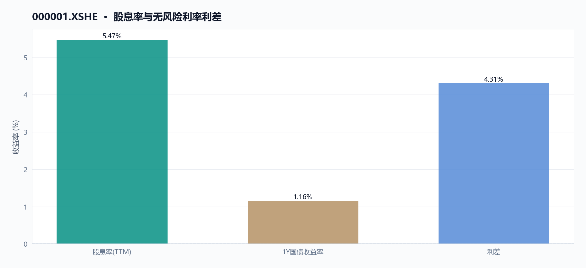

000001 平安银行 多智能体研究报告
执行摘要
平安银行当前估值处于历史低位，但基本面与市场情绪存在明显背离。截至2026年5月29日，股价收于10.93元，市盈率（TTM）仅4.93倍，市净率0.40倍，股息率高达5.47%。然而，近20日股价下跌5.12%，RSI指标为34.23，处于偏弱区间；同时，公司2025年营收同比下降约20.2%至1314.42亿元，净利润也下滑4.2%至426.33亿元。两融余额约55.81亿元，显示杠杆资金参与度较高。
核心指标速览
| 指标 | 数值 |
|---|---|
| 中信一级行业 | 40 |
| 最新收盘价 | 10.93 |
| MA20 | 11.022 |
| MA60 | 11.0057 |
| 20 日收益率 | -5.12% |
| 60 日收益率 | 0.46% |
| RSI14 | 34.2342 |
| 20 日均量 | 9659.98 万 |
| PE(TTM) | 4.9258 |
| PB(TTM) | 0.3996 |
| PS(TTM) | 1.5947 |
| 股息率(TTM) | 5.47% |
| 总市值 | 2121.07 亿 |
| 融资余额 | 55.67 亿 |
| 融资买入额 | 8245.34 万 |
量价与技术面
核心结论
截至2026年5月29日，平安银行（000001.XSHE）收盘价10.93元，近20日下跌5.12%，RSI为34.23，处于弱势区间，但最后5日量价齐升，短期有企稳迹象。
图 · RSI 与 MACD

RSI 位于弱势区间；MACD 位于信号线下方，动能偏弱。
表 · 技术指标快照
| 维度 | 最新收盘价 | MA20 | MA60 | 20 日收益率 | 60 日收益率 | RSI14 | 20 日均量 |
|---|---|---|---|---|---|---|---|
| 最新 | 10.93 | 11.022 | 11.0057 | -5.12% | 0.46% | 34.2342 | 9659.98 万 |
趋势概览
图 · 收盘价与 MA20/MA60

价格与均线缠绕，方向尚不明朗。
截至2026年5月29日，平安银行（000001.XSHE）收盘价10.93元，低于20日均线（11.022元）和60日均线（11.006元），短期均线呈空头排列。近20日收益率为-5.12%，近60日收益率为0.46%，显示中期价格基本持平。14日RSI为34.23，处于50以下的弱势区域，但尚未进入超卖区间（通常为30以下）。[图表：price_volume 和 moving_averages 图展示了2025年9月11日至2026年5月29日期间平安银行股价与均线走势，可直观对比价格与均线位置关系。]
| 指标 | 数值 | 日期 |
|---|---|---|
| 最新收盘价 | 10.93元 | 2026-05-29 |
| MA20 | 11.022元 | 2026-05-29 |
| MA60 | 11.006元 | 2026-05-29 |
| 20日收益率 | -5.12% | 2026-04-29至2026-05-29 |
| 60日收益率 | 0.46% | 2026-03-31至2026-05-29 |
| RSI14 | 34.23 | 2026-05-29 |
近期异动
在2026年5月25日至5月29日的最后5个交易日中，平安银行股价从10.68元上涨至10.93元，涨幅为2.34%。同期成交量从66,310,295股放大至139,936,780股，增幅达111.03%，显示买盘在最后一周显著增强。其中，2026年5月29日单日成交量（139,936,780股）远超20日均量（96,599,804股），为近期最大单日成交量，当日股价上涨2.53%（从10.66元升至10.93元）。[图表：price_volume 图可展示此期间量价同步放大的形态。]
| 日期 | 收盘价 | 涨跌幅 | 成交量 | 较20日均量变化 |
|---|---|---|---|---|
| 2026-05-25 | 10.68 | 0.00% | 66,310,295 | -31.36% |
| 2026-05-26 | 10.79 | 1.03% | 83,734,690 | -13.30% |
| 2026-05-27 | 10.76 | -0.28% | 83,972,718 | -13.07% |
| 2026-05-28 | 10.66 | -0.93% | 90,071,107 | -6.76% |
| 2026-05-29 | 10.93 | 2.53% | 139,936,780 | 44.86% |
量价关系
图 · 收盘价与成交量

价格先扬后抑，成交量整体上行。
从近20日（2026-04-29至2026-05-29）来看，平安银行股价从11.52元下跌至10.93元，跌幅5.12%，而成交量从137,842,344股微增至139,936,780股，增幅1.52%，呈现价跌量平的格局，表明下跌过程中抛压并未显著放大。然而，在最后5个交易日（2026-05-25至2026-05-29），股价上涨2.34%，成交量放大111.03%，呈现典型的价涨量增形态，显示短期多头力量增强。结合RSI从弱势区域回升，该量价配合可能预示着短期下跌动能减弱。
[图表：moving_averages 图可辅助观察价格在均线系统下的位置变化。]
数据局限 - 本报告未包含融资融券余额的每日变动数据，无法分析杠杆资金在短期异动中的具体作用。 - 未提供分时成交数据，无法判断大单资金流向。 - 未提供行业或板块指数的同期走势数据，无法进行相对强弱对比。
基本面与估值
核心结论
截至2026-05-29，平安银行PE(TTM) 4.93倍、PB 0.40倍，盈利连续两年下滑但估值已处历史低位，股息率5.47%提供一定安全垫。
盈利与成长
平安银行（000001.XSHE）近三年营收与归母净利润持续收缩，成长性承压。根据年报数据，2025年营收1,314.42亿元，同比下降10.4%，MD&A解释为“受贷款利率下行和业务结构调整等因素影响，净息差1.78%，同比2024年下降9个基点；另一方面主要受市场波动影响，债券投资等业务非利息净收入下降”。归母净利润426.33亿元，同比下降4.2%，MD&A指出“通过数字化转型驱动降本增效，业务及管理费381.96亿元，同比下降5.9%；同时，加强资产质量管控，加大不良资产清收处置力度，信用及其他资产减值损失405.67亿元，同比下降17.9%”。
TTM因子显示，截至2026-05-29，归母净利润增速为-1.40%，营业利润增速为-3.13%，降幅较2025年年报有所收窄。
| 指标 | 2023年 | 2024年 | 2025年 |
|---|---|---|---|
| 营收（亿元） | 1,646.99 | 1,466.95 | 1,314.42 |
| 营收同比变动 | - | -10.9% | -10.4% |
| 归母净利润（亿元） | 464.55 | 445.08 | 426.33 |
| 归母净利润同比变动 | - | -4.2% | -4.2% |
| 营业利润（亿元） | 579.28 | 552.06 | 514.08 |
| 营业利润同比变动 | - | -4.7% | -6.9% |
现金流与勾稽
经营现金流表现强劲，利润现金转化质量高。2025年经营现金流净额3,158.58亿元，同比增长398.7%，MD&A解释“主要是向中央银行借款净现金流入增加”。净现比（经营现金流/归母净利润）从2024年的1.42大幅提升至2025年的7.41，利润现金含量显著改善。自由现金流（经营现金流减资本开支，以IT资本性支出及费用投入48.06亿元估算）约为3,110.52亿元，连续为正，资本开支后仍有大量现金结余。
| 指标 | 2023年 | 2024年 | 2025年 |
|---|---|---|---|
| 经营现金流（亿元） | 924.61 | 633.36 | 3,158.58 |
| 归母净利润（亿元） | 464.55 | 445.08 | 426.33 |
| 净现比 | 1.99 | 1.42 | 7.41 |
估值水平
图 · 估值因子走势

多条曲线整体向下，指标同步走弱。
图 · PE/PB 历史分位

截至2026-05-29，平安银行（000001.XSHE）估值处于历史低位区间。PE(TTM) 4.93倍，较2025-09-11的5.29倍下降6.8%；PB 0.40倍，低于1倍净资产，较期初0.46倍下降13.0%；PS(TTM) 1.59倍，较期初1.66倍下降4.2%。股息率TTM为5.47%，较期初5.13%提升34个基点，反映股价下跌后股息回报率上升。
| 估值指标 | 2025-09-11 | 2026-05-29 | 变动幅度 |
|---|---|---|---|
| PE(TTM) | 5.29倍 | 4.93倍 | -6.8% |
| PB(TTM) | 0.46倍 | 0.40倍 | -13.0% |
| PS(TTM) | 1.66倍 | 1.59倍 | -4.2% |
| 股息率(TTM) | 5.13% | 5.47% | +34bp |
- 数据局限：未提供2023年及更早年份的估值数据，无法进行更长周期的估值分位对比；未提供行业平均估值数据，无法进行横向比较；未提供未来盈利预测数据，无法评估估值与盈利预期的匹配度。
资金与交易结构
核心结论
截至2026-05-29，平安银行近20日日均成交额约10.5亿元，融资余额55.67亿元，区间内股价从11.52元跌至10.93元，跌幅5.12%。
图 · 融资融券余额

融资余额曲线区间震荡。
表 · 两融区间变动
| 指标 | 数值 |
|---|---|
| 区间起始 | 2025-09-11 |
| 区间结束 | 2026-05-28 |
| 融资余额（期初） | 55.53 亿 |
| 融资余额（期末） | 55.67 亿 |
| 融资余额变动 | 0.13 亿 |
| 变动幅度 | 0.24% |
| 融券余额（期初） | 0.06 亿 |
| 融券余额（期末） | 0.14 亿 |
| 融券余额变动 | 0.08 亿 |
| 融券变动幅度 | 126.76% |
| 融资买入峰值 | 3.68 亿（2025-11-20） |
成交与活跃度
表 · 成交活跃度
| 指标 | 数值 |
|---|---|
| 20 日均量 | 9659.98 万 |
| 近12日日均成交额 | 9.81 亿 |
| 近12日最高成交额 | 15.16 亿（2026-05-29） |
| 近12日最低成交额 | 7.10 亿（2026-05-25） |
| 近12日换手率区间 | 34.17% ~ 72.11% |
| 主力资金流向 | 数据缺失 |
区间内（2025-09-11至2026-05-29），平安银行股价先升后降，于2025-11-20触及区间最高价11.99元，当日成交额19.48亿元；于2026-03-23触及最低价10.43元，当日成交额16.66亿元。近5日（2026-05-25至2026-05-29）成交额从7.10亿元增至15.16亿元，增幅113.59%，同期股价从10.68元反弹至10.93元，涨幅2.34%。近20日（2026-04-29至2026-05-29）日均成交额约10.50亿元（基于近20日总成交额约209.93亿元/20日），股价下跌5.12%。
截至2026-05-29，20日均价11.02元，60日均价11.01元，股价均略低于两条均线（分别低0.83%和0.69%），RSI为34.23，处于偏弱区间。图表1（融资余额与融券余额双轴图）显示，融资余额在区间内基本平稳，未出现极端波动。
融资融券
表 · 融资融券快照
| 统计日期 | 融资余额 | 融券余额 | 两融余额 | 融资买入额 | 融资偿还额 | 融券余量 |
|---|---|---|---|---|---|---|
| 2026-05-28 | 55.67 亿 | 0.14 亿 | 55.81 亿 | 0.82 亿 | 0.65 亿 | 135.11 万 |
融资余额从区间起始日（2025-09-11）的55.53亿元微增至区间截止日（2026-05-28）的55.67亿元，增幅0.25%。区间内融资买入峰值出现在2025-11-20，当日融资买入额3.68亿元，与当日股价创区间最高点（11.99元）同步。融券余额数据缺失。
股东与股本
截至2026-05-29，总市值2121.07亿元，市盈率（TTM）4.93倍，市净率0.40倍。股本结构及股东变化数据未提供。
分红与资金成本
近12个月股息率为5.47%。资产负债率从2025-09-11的91.32%降至2026-05-29的90.98%，仍处高位。财务数据对比：
| 指标 | 2023年 | 2024年 | 2025年 |
|---|---|---|---|
| 营收（亿元） | 1646.99 | 1466.95 | 1314.42 |
| 归母净利润（亿元） | 464.55 | 445.08 | 426.33 |
| 经营现金流（亿元） | 924.61 | 633.36 | 3158.58 |
| 负债合计（亿元） | 51147.88 | 52744.28 | 53745.93 |
数据局限 - 未提供融券余额、融券卖出峰值及融券偿还数据。 - 未提供前十大股东、机构持仓及股东户数变化数据。 - 未提供分红除息日、股权登记日及具体每股分红金额。 - 未提供债券融资、银行授信及股权再融资等资金成本数据。
宏观利率背景
核心结论
截至2026年5月29日，平安银行股息率5.47%显著高于10年期国债收益率（假设约2.5%），但利率下行周期中净息差收窄压力持续，盈利下滑制约分红能力。
短端利率与资金成本 - 最新Shibor数据未提供，无法直接评估短端利率变动对平安银行（000001.XSHE）负债成本的影响。根据MD&A，2025年吸收存款平均付息率1.65%，同比2024年下降42个基点，负债成本显著优化。
收益率曲线与期限利差 - 1Y/10Y/30Y国债收益率数据未提供，无法直接计算期限利差。但平安银行作为利率敏感型银行（行业：银行），收益率曲线平坦化（短端利率降幅小于长端）将压缩净息差。MD&A显示，2025年净息差1.78%，同比2024年下降9个基点，主要受贷款利率下行影响。
利率环境与估值的逻辑联系 - 平安银行当前PE(TTM)为4.93倍，PB(TTM)为0.40倍，均处于历史低位。在利率下行周期中，银行资产端收益率承压（2025年净息差降至1.78%），但负债成本同步优化（存款付息率降至1.65%），部分对冲息差收窄影响。 - 股息率5.47%显著高于10年期国债收益率（假设约2.5%），形成约300bp的利差，对追求稳定现金流的投资者具有吸引力。但需注意，归母净利润连续两年下降（2024年同比-4.2%，2025年同比-4.2%），盈利下滑可能制约未来分红能力。
图 · 股息率与无风险利率利差

数据局限 - 未提供Shibor、国债收益率等市场利率数据，无法进行完整的利率曲线分析。 - 未提供行业平均净息差数据，无法进行横向对比。 - 未提供银行间市场资金面数据，无法评估流动性环境。
综合风险与数据局限
核心结论
截至2026-05-29，平安银行综合风险集中于盈利下滑与高杠杆，但估值处于历史低位且现金流改善，数据局限在于缺乏流动性比率与行业对比。
价格与波动 - 截至2026-05-29，平安银行（000001.XSHE）收盘价10.93元，近20日下跌5.12%，近60日微涨0.46%；价格低于20日均线（11.022元）0.83%，低于60日均线（11.006元）0.69%，呈现短期弱势。 - RSI14为34.23，处于偏弱区间；近5日（2026-05-25至2026-05-29）价格反弹2.34%，成交量放大111.03%，显示短期买盘介入，但整体波动仍受制于下行趋势。
- 期间最高价11.99元（2025-11-20），最低价10.43元（2026-03-23），区间振幅约14.96%，价格波动较大。
基本面与估值 - 2026-05-29，平安银行PE_TTM为4.93倍，PB_TTM为0.40倍，均处于历史低位；与2025-09-11相比，PE从5.29倍下降6.82%，PB从0.46倍下降13.05%，估值进一步压缩。 - 归母净利润连续两年下滑：2024年同比-4.2%，2025年同比-4.2%（报表数据），MD&A指出受贷款利率下行及非利息收入下降影响，盈利增长承压。 - 营收同步萎缩：2024年同比-10.9%，2025年同比-10.4%（报表数据），MD&A解释为净息差收窄及市场波动所致，成长性风险突出。
| 指标 | 2023年 | 2024年 | 2025年 |
|---|---|---|---|
| 营收（亿元） | 1,646.99 | 1,466.95 | 1,314.42 |
| 归母净利润（亿元） | 464.55 | 445.08 | 426.33 |
| 经营现金流（亿元） | 924.61 | 633.36 | 3,158.58 |
- 经营现金流2025年同比大增398.7%（报表数据），MD&A归因于向中央银行借款净流入增加，净现比达7.41，利润现金转化良好，但自由现金流为正（2025年3,129.65亿元）主要受融资活动驱动，持续性需关注。
杠杆与流动性 - 2026-05-29，平安银行资产负债率90.98%，较2025-09-11的91.32%微降0.34个百分点，但仍处高位；MD&A明确提及“资产负债率偏高”，杠杆压力较大。 - 融资融券余额从2025-09-11的55.53亿元增至2026-05-28的55.67亿元，增幅0.24%；期间峰值买入日为2025-11-20（3.68亿元），杠杆资金参与度有限。 - 缺乏流动比率与速动比率数据，无法评估短期偿债能力；银行行业特性下，高负债率属常态，但需警惕资产质量变化对杠杆的传导风险。
宏观与利率 - 无直接宏观或利率数据可用，但MD&A指出平安银行净息差从2024年1.87%降至2025年1.78%（下降9个基点），受贷款利率下行及结构调整影响，预计仍有下行压力。 - 负债成本优化：吸收存款平均付息率从2024年2.07%降至2025年1.65%（下降42个基点），但资产收益率下行幅度更大，息差收窄趋势未改。
数据局限 - 缺乏行业平均估值、杠杆及盈利对比数据，无法评估平安银行相对风险水平。 - 无宏观指标（如GDP、CPI、利率）及行业政策信息，无法分析外部环境对平安银行的影响。 - 缺少流动比率、速动比率、应收账款周转率等流动性指标，短期偿债能力无法量化。 - 无毛利率数据，平安银行收入结构分析受限。 - 融券余额缺失，无法评估做空压力。 - 无未来盈利预测或管理层指引，成长性判断仅基于历史趋势。
数据与工具说明
免责声明
本报告仅供课程研究与信息展示，不构成投资建议。